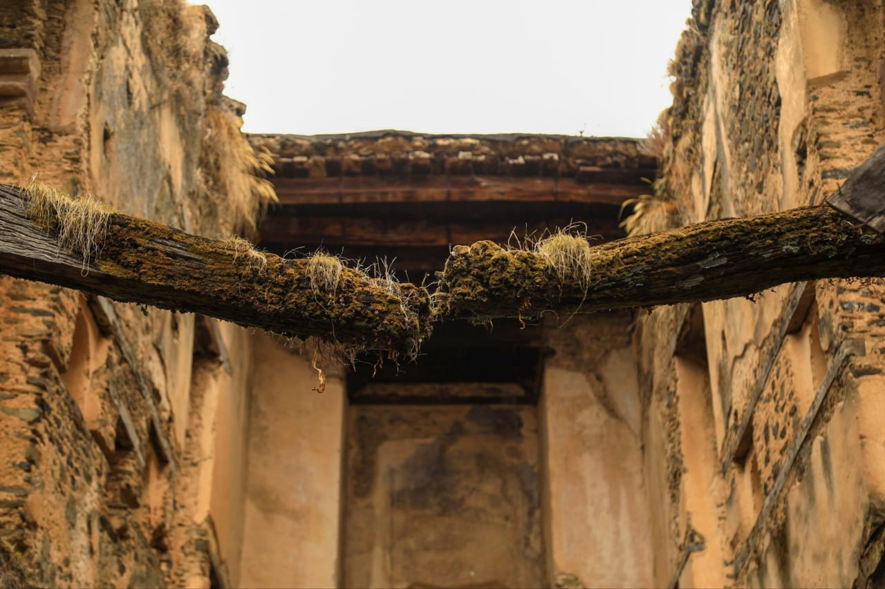

01
Morning in Gondar
The city stirs before the world wakes. Coffee smoke, bare feet on cold stone, the call to prayer rising over corrugated rooftops.
12 Photographs
Addis Ababa · Ethiopia
Documentary Event and Travel Photographer
"Without realising it, photography became more than just taking pictures;Explore the Work
it became a way for me to see life differently."
Documenting everyday life, culture & honest human stories one frame at a time. Documenting everyday life, culture & honest human stories one frame at a time.
The city stirs before the world wakes. Coffee smoke, bare feet on cold stone, the call to prayer rising over corrugated rooftops.
12 Photographs
Earth, labor, and ancient rituals. The countryside moves to its own unhurried tempo.
9 PhotographsEvery face carries a universe of stories. These are the ones rarely seen, never staged.
14 Photographs"I am a storyteller with a deep love for my culture. I naturally prefer staying quiet, observing my surroundings, and capturing moments I can turn into stories."
I began with a phone and a forest. Today, as a Film & TV Production student at the University of Gondar, I bring a cinematic eye to Ethiopia's streets — framing not just images, but truths.
Read My StoryWhen someone sees a camera, they change. My job is to be part of the landscape before the camera appears or not to appear at all...
Read MoreSeeing my photographs in a gallery in Germany thousands of miles from the streets where I took them made me realise how images can cross every border...
Read MoreI don't carry a flash. I wait for the light that already exists the kind that falls through doorways, bounces off dust, cuts across faces at 6am...
Read More"Cultural integrity is the one standard I never compromise on. Whether I'm in a rural village or a busy city, I make sure I approach every tradition and every person with honesty and care."
Yonatan Nigussie